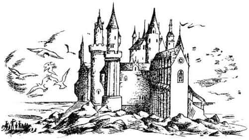
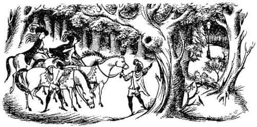
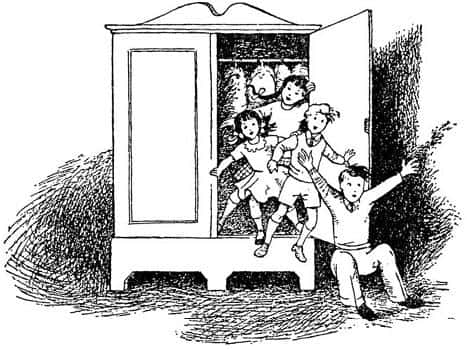

Beyaz Geyik Avı
Geldiklerinden birkaç dakika sonra savaş tamamıyla sona ermişti. Düşmanların çoğu Aslan ve arkadaşlarının ilk saldırısında öldürülmüştü. Sağ kalanlar da Cadı’nın öldüğünü görünce ya teslim olmuş ya da kaçmıştı. Lucy’nin bundan sonra gördüğü ilk şey, Peter ve Aslan’ın el sıkışmalarıydı. Peter’in şimdiki hali ona tuhaf geliyordu – yüzü çok soluk ve ciddiydi ve çok daha yaşlı görünmekteydi.
“Bütün bunlar Edmund’un sayesinde oldu Aslan” diyordu Peter, “eğer o olmasaydı yenilmiştik. Cadı birliklerimizi her yerde taşa çeviriyordu. Fakat hiçbir şey Edmund’u durduramadı. Üç insan yiyen devle savaşarak, senin leoparlarından birini heykele çevirmek üzere olan Cadı’nın yanına ulaştı. Doğrudan ona saldırmak yerine kılıcını sert bir şekilde Cadı’nın asasına indirdi. Eğer ona saldırmayı deneseydi Cadı onu kolayca heykele dönüştürürdü. Diğerlerinin yaptığı hata da buydu. Cadı’nın asası kırıldıktan sonra şansımız açılmaya başladı – keşke bu kadar savaşçımızı kaybetmeseydik. Edmund ağır bir yara aldı. Gidip onu görmemiz gerek.”
Edmund’u savaş hattının biraz gerisinde Bayan Kunduz’un bakımı altında buldular. Her tarafı kan içindeydi. Ağzı açık ve yüzü soluk yeşil renkteydi.
“Acele et Lucy” dedi Aslan.
O anda Lucy, neredeyse ilk kez, Noel hediyesi olarak ona verilen değerli iksiri hatırladı. Elleri o kadar çok titriyordu ki şişenin tıpasını açmakta zorlanıyordu. Sonunda başardı ve erkek kardeşinin ağzına birkaç damla iksir damlattı.
Lucy sabırsızlıkla Edmund’un yüzüne bakıp, iksirin bir etkisi olup olmayacağını merak ederken, “Diğer yaralılar da var” dedi Aslan.
“Biliyorum” dedi Lucy hoşnutsuz. “Bekle bir dakika.”
“Havvakızı” dedi Aslan daha ciddi bir sesle, “onlar da ölmek üzere. Edmund yüzünden daha çok insanın ölmesine gerek var mı?”
“Özür dilerim Aslan” dedi Lucy, ayağa kalkıp onunla yürüyerek. Sonraki yarım saat boyunca, Lucy yaralılara yardım etmekle, Aslan da taşa çevrilenleri yeniden canlandırmakla uğraştılar. Sonunda Edmund’la ilgilenecek zamanı olduğunda, onu, ayakta, sadece yaraları iyileşmiş olarak değil, ama uzun süreden beri – aslında onun bozulmaya başladığı o berbat okuldaki ilk yılından beri – görmediği kadar iyi durumda buldu Lucy. Edmund eskisi gibi olmuştu. Artık kimseden utanmıyordu. Ve orada, savaş alanında, Aslan onu Şövalye yaptı.
“Aslan’ın onun uğruna yaptıklarını biliyor mu?” diye fısıldadı Lucy, Susan’ın kulağına. “Cadı’yla yapılan anlaşmanın gerçekte ne olduğunu biliyor mu?”
“Şşşş! Hayır. Elbette bilmiyor” dedi Susan.
“Söylemek gerekmez mi?” dedi Lucy.
“Eminim gerekmez” dedi Susan. “Bu, onun için çok kötü olur. Sen onun yerinde olsaydın nasıl hissedeceğini düşün.”
“Fark etmezdi, ben bilmesi gerektiğini düşünüyorum” dedi Lucy. Konuşmaları orada bitti.
O gece bulundukları yerde uyudular. Aslan’ın onlara nasıl yiyecek bulduğunu bilmiyorum; ama her nasılsa saat sekize doğru kendilerini çimlerin üzerinde oturmuş, nefis bir akşamüzeri çayı içerken buldular. Ertesi gün büyük nehrin yanından doğuya doğru yola çıktılar. Ve daha ertesi gün, çay zamanı yaklaştığında, nehrin ağzına ulaştılar. Cair Paravel Kalesi yukarıda, küçük bir tepe üstünde yükseliyordu. Önlerinde, küçük tuzlu su havuzcuklarıyla, kayalarla, yosunlarla, denizin kokusuyla ve sahile vurduğunda kırılan renkli dalgalarla dolu kumluklar uzanıyordu. Ah, o martıların sesleri! Duydunuz mu? Hatırlayabiliyor musunuz?

O akşam çaydan sonra çocukların dördü de yeniden sahile gittiler. Ayakkabılarını ve çoraplarını çıkarıp parmakları arasında kumların yumuşaklığını hissettiler. Fakat ertesi gün onlar için ciddi bir gün oldu. Çünkü Aslan, Cair Paravel’in büyük salonunda – çatısı fildişinden yapılmış, batıdaki duvarları tavuskuşu tüyleriyle kaplı ve doğudaki kapısı denize açılan o harika salonda, bütün dostlarının önünde, borazan sesleri arasında onlara ciddiyet ve vakarla taçlarını giydirdi. Kulakları sağır edercesine yükselen “Yaşasın Kral Peter! Yaşasın Kraliçe Susan! Yaşasın Kral Edmund! Yaşasın Kraliçe Lucy!” sesleri arasında dört çocuğu dört ayrı tahta oturttu.
“Narnia’da bir kez kral ya da kraliçe oldunuz mu her zaman kral ya da kraliçesinizdir. Buna layık olun Âdemoğulları! Layık olun Havvakızları!” dedi Aslan.
Ardına kadar açık olan doğu kapısından sahile yakın yüzmekte olan ve yeni kral ve kraliçelerinin şerefine şarkı söyleyen denizkızlarının ve denizadamlarının sesleri geliyordu.
Böylece çocuklar tahtlarına oturdular, ellerine asalar verildi ve tüm dostlarına, Faun Tumnus’a, kunduzlara, Dev Gürleyenşapşal’a, leoparlara, iyi sentorlara, iyi cücelere ve de Aslan’a ödüller verip onları onurlandırdılar. O gece Cair Paravel’de büyük bir şenlik, dans ve eğlence vardı; şarap su gibi aktı, altın parıltıları görüldü ve içerdeki müziğe cevap olarak deniz insanlarının daha tuhaf, tatlı ve kulakları delen müzikleri duyuldu.
Tüm bu şenliklerin ortasında Aslan sessizce kayboldu. Kral ve Kraliçeler onun orada olmadığını fark ettiklerinde hiçbir şey söylemediler. Çünkü Bay Kunduz onları ikaz etmişti, “O bir gün gelir, bir gün gider” demişti. “Onu bir gün görürsünüz, ertesi gün kaybolur. Bir yere bağlı olmayı sevmez – ve elbette ilgileneceği başka ülkeler de var. Her şey yolunda artık burada. Sık sık gelir o; yeter ki zorlamayın. Vahşidir bilirsiniz. Evcil bir Aslan gibi değildir.”
Şimdi gördüğünüz gibi bu hikâye neredeyse (ama tamamıyla da değil) sona ermek üzere. Bu iki Kral ve iki Kraliçe Narnia’yı iyi yönettiler. Onların yönetiminde Narnia uzun bir dönem mutlu yaşadı. Önceleri zamanlarının büyük bölümünü Beyaz Cadı’nın ordusundan artakalanları bulup yok etmekle geçirdiler. Gerçekten de uzun bir süre, ormanın vahşi bölgelerinde uğursuz varlıkların gizlendiği haberleri geldi. Bir gün hortlak görüldüğü, bir gün cinayet işlendiği, bir ay boyunca kurt adamın dolaştığı ve büyücü kocakarılar olduğu gibi haberler geliyordu. Fakat sonunda bütün bu kötü tohumlar yok edildi. Sonra iyi kanunlar çıkardılar, barışı korudular, ağaçların gereksizce kesilmesini önlediler, genç cüce ve satirleri okula gönderilmekten kurtardılar, herkesin işine burnunu sokanları, her işe karışanları engellediler ve sıradan insanların, kimsenin kimseye karışmadığı bir ortamda yaşamasını sağladılar. Narnia’nın kuzeyindeki (Dev Gürleyenşapşal’dan tamamıyla değişik bir türden olan) vahşi devler sınırı geçtiğinde onları geri püskürttüler. Deniz ötesi ülkelerle dostluk kurdular, ittifaklar yaptılar, onları ziyaret etmek için elçiler gönderdiler ve o ülkelerin elçileri de onları ziyaret etti. Ve yıllar geçtikçe büyüdüler ve değiştiler. Peter uzun boylu, göğüs kafesi geniş bir adam ve büyük bir savaşçı olmuştu. Ona Muhteşem Kral Peter adı verilmişti. Susan uzun boylu, cana yakın, siyah saçları neredeyse ayaklarına kadar uzanan bir kadın olmuştu ve deniz ötesi ülkelerin kralları onunla evlenebilmek için elçiler göndermeye başlamışlardı. Ona Nazik Susan adı verildi. Edmund, Peter’den daha sessiz ve ciddi bir adamdı. Danışmanlık ve karar verme yeteneği mükemmeldi. Ona Kral Adil Edmund deniyordu. Lucy’ye gelince, o altın sarısı saçlarıyla her zaman güzeldi. Çevre ülkelerdeki tüm prensler onun kendi kraliçeleri olmasını istiyorlardı. Halkı ona Kraliçe Cesur Lucy adını vermişti.
Ve böylece büyük bir mutluluk içinde yaşadılar. Dünyamızdaki yaşamlarını hatırladıkları zaman bu onlara bir rüya gibi geliyordu. Yıllar sonra bir gün Tumnus (artık orta yaşlı bir Faun’du ve şişmanlamaya başlamıştı) nehirden aşağı indi ve Beyaz Geyik’in –yakalayanın dileklerini yerine getiren Beyaz Geyik’in– o taraflarda bir kez daha görüldüğü haberini getirdi. O zaman iki Kral, iki Kraliçe ve sarayın önde gelenleri, Batı Ormanları’nda Beyaz Geyik’i izlemek üzere tazılar ve borazanlarla ava çıktılar. Çok geçmeden onu gördüler. Geyik yılmadan, her güçlüğü aşarak kaçtı. Ta ki saray mensuplarının atları yorulana kadar ve onu takip eden sadece dört kişi kalana kadar. Geyiğin, atlarının takip edemeyeceği bir çalılığa girdiğini gördüler. O zaman Kral Peter (uzun süredir kral ve kraliçe olduklarından dolayı artık tamamen değişik bir şekilde konuşuyorlardı), “Sevgili dostlar, artık atlarımızdan inelim ve bu hayvanı çalılıkta takip edelim; çünkü bundan daha soylu bir av hayvanı avlamadım.” dedi.

“Sör” dedi diğerleri, “öyle olsa bile avlayalım.”
Bunun üzerine yere inip atlarını ağaçlara bağladılar. Sık ağaçlı ormanda yürümeye başladılar. Daha ormana yeni girmişlerdi ki Kraliçe Susan:
“Sevgili dostlar” dedi, “işte size büyük bir mucize, çünkü demirden bir ağaç görüyorum galiba.”
“Madam” dedi Kral Edmund, “iyice bakarsanız, üzerine lamba konulmuş demirden bir sütun olduğunu görebilirsiniz.”
“Aslan’ın yelesi aşkına” dedi Kral Peter, “ağaçların bu kadar sık ve uzun olduğu bir yerde, yansa bile hiçbir şeyi aydınlatmayacak olan bir lamba koymak için ne tuhaf bir sütun.”
“Sör” dedi Kraliçe Lucy. “İhtimal ki bu direk ve lamba buraya konulduğunda ağaçlar küçüktü. Belki daha az ağaç vardı, belki de hiç yoktu. Çünkü burası genç bir orman ve bu lamba direği eski.” Direğe bakarak öylece duruyorlardı. Sonra Kral Edmund:
“Nedenini bilmiyorum ama bu direğin üzerindeki lamba bende tuhaf bir etki yaptı” dedi. Böyle bir şeyi daha önce görmüş gibiyim; bir rüyada ya da rüya içindeki rüyada.”
“Sör” diye cevapladı diğerleri, “bizim aklımızdan da geçiyor bu.”
“Ve dahası” dedi Kraliçe Lucy, “eğer bu lamba ve direği geçersek kendimizi acayip maceralar içinde bulacağımızı ya da talihimizde büyük bir değişiklik olacağını hissediyorum.”
“Madam” dedi Kral Edmund, “aynı sezgiler benim yüreğimde de fırtınalar koparıyor.”
“Ve benimkinde de, sevgili kardeşim” dedi Kral Peter.
“Benimkinde de” dedi Kraliçe Susan. “Bana sorarsanız, Beyaz Geyik’i artık izlemeyelim. Yavaşça atlarımıza atlayıp geri dönelim.”
“Madam” dedi Kral Peter, “o konuda beni affetmenizi rica ederim. Çünkü dördümüz de Narnia’ya kral ve kraliçe olduğumuzdan beri savaşlar, maceralar, kahramanlıklar yaşadık. Başta hukuk işleri olmak üzere pek çok sorunu çözdük. El attığımız hiçbir işten vazgeçmedik ve hepsinde başarılı olduk.”
“Kardeşim” dedi Kraliçe Lucy, Kraliçe Susan’a, “soylu kardeşim doğru söylüyor. Bana göre, şimdi peşinde olduğumuz soylu hayvanı korkudan ya da önsezilerimizden dolayı izlemekten vazgeçersek, utanmalıyız.”
“Ben de aynı şeyleri söyleyecektim” dedi Kral Edmund. “Ve bu şeyin önemini öğrenmeyi öylesine arzuluyorum ki, Narnia ve tüm adalardaki en değerli mücevheri verseler bile geri dönmem.”
“Aslan’ın aşkına” dedi Kraliçe Susan, “Madem öyle düşünüyorsunuz, haydi gidelim ve başımıza gelecekleri kabullenelim.”
Böylece Kral ve Kraliçeler sık ağaçlıklara girdiler. Çok gitmeden hepsi de gördükleri şeye lamba direği dendiğini hatırladılar. Daha yirmi adım atmamışlardı ki, ağaçların arasında değil de paltolar arasında yürüdüklerini fark ettiler ve bir an sonra bir dolabın kapısından boş bir odaya yuvarlandılar. Artık av giysileri içindeki Kral ve Kraliçeler değil, eski giysileri içindeki Peter, Susan, Edmund ve Lucy’ydiler. Saklanmak için dolaba girdikleri aynı gün ve aynı saatti. Bayan Macready ve ziyaretçiler hâlâ koridorda konuşuyorlardı. Şansları yaver gitti, ziyaretçiler odaya girmedi ve çocuklar da yakalanmadı.

Bu hikâye böylece bitecekti, ancak çocuklar dolaptaki paltolardan dördünün neden kaybolduğunu Profesör’e açıklamak zorunda olduklarını hissettiler. Harikulade bir adam olan Profesör, yalan söylememelerini ya da gülünç olmamalarını söyleyeceği yerde bütün hikâyeye inandı. “Hayır” dedi, “paltoları almak için dolaptan geçerek öteye gitmek bir işe yaramaz sanıyorum. Bu yolla yeniden Narnia’ya gidemezsiniz. Gitseniz bile paltolar artık pek işe yaramaz! Ha?.. Ne dedin?.. Evet, bir gün yeniden Narnia’ya döneceksiniz. Narnia’da bir kere kral oldunuz mu her zaman kral kalırsınız. Ancak aynı yolu ikinci kez kullanmayı denemeyin. Aslında oraya gitmeyi hiç denemeyin; ummadığınız bir anda yaşayacaksınız bunu. Ve bu konuyu kendi aranızda bile pek fazla konuşmayın. Ayrıca benzer maceraları yaşamamış hiç kimseye de anlatmayın bunları. Ne dedin? Nasıl mı bileceksiniz? Oh, bilirsiniz merak etmeyin. Söyleyecekleri tuhaf şeyler – hatta görünüşleri – sırlarını ele verir. Gözlerinizi açın. Hay Allah, bu okullarda ne öğretiyorlar bunlara?”
Dolap macerasının sonu böyle. Ne var ki Profesör haklıydı, bu sadece Narnia maceralarının başlangıcı oldu.
C.S. Lewis’in önerdiği okuma sırasıyla Narnia Günlükleri:
Büyücünün Yeğeni
Aslan, Cadı ve Dolap
At ve Çocuk
Prens Caspian
Şafak Yıldızı’nın Yolculuğu
Gümüş Sandalye
Son Savaş